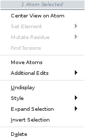
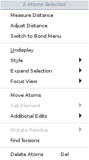
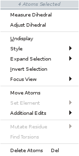
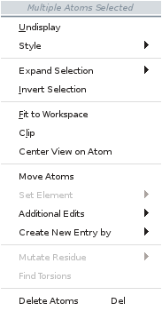

Several of the main window components have shortcut menus, which you open by right-clicking and holding over the component. The shortcut menus for the status bar and the command input area only have two items, Hide, which hides the component, and Help, which displays the relevant help topic.
The Workspace has three shortcut menus: one for the Workspace itself (the Workspace shortcut menu), one for the atoms in the current selection (the selection shortcut menu), and one for bonds (the bond shortcut menu). The selection shortcut menu is also available from the sequence viewer, but has a more limited selection of items, and has a few additional items. The items on these menus are described below. Where relevant, conditions on when the item is displayed are included.
When you right-click and hold in the Workspace:
The sequence viewer shortcut menu can be uses to perform various actions on the sequences or the display. If you do not have any residues selected in the sequence viewer, the sequence viewer shortcut menu is displayed. If you have residues selected, the selection shortcut menu is displayed.
Note: These shortcut menus are not available if you have the Toggle Table open.
The items on the selection shortcut menu depend on the atoms you have selected. The complete list is given below.
|  |  |
|
 |  |
| Menu Item | Action |
|---|---|
| Measure item | Measure the defined distance, angle, or dihedral. The item depends on the number of atoms selected. |
| Adjust item | Adjust the defined distance, angle, or dihedral. The item depends on the number of atoms selected. Displays the relevant Adjust banner. |
| Add Bond | Add a bond between the two selected atoms, if they are not already bonded. Only shown for two atoms that are not bonded to each other. |
| Switch to Bond Menu | Switch to the Bond shortcut menu. Only shown for two atoms that are bonded to each other. |
|
Undisplay |
Undisplay the selected atoms. |
|
Style |
Open a Style toolbox to set the style for the selected atoms. |
|
Expand Selection |
Expand the selection to include other atoms. Opens a submenu that includes:
|
|
Invert Selection |
Select the unselected atoms and deselect the selected atoms. |
| Fit to Workspace | Fit the selection to the Workspace and reset the center of rotation. Not available for single-atom selections. |
| Clip | Clip the display to the selected atoms (moves the clipping planes). Not available for single-atom selections. |
| Center View on Atom | Center the view on the selected atoms. This item is on the Focus View submenu when the selection has 2-4 atoms. |
| Focus View |
Submenu for view-related items when 2-4 atoms are selected. Contains the Fit to Workspace, Clip, and Center View on Atom items. |
|
Move Atoms |
Move the selected atoms. Displays the Move Atoms banner. |
|
Set Element |
Change the selected atoms to atoms of the element chosen from the submenu. The submenu contains a palette of common elements, and a "..." button for selecting other elements from a periodic table. |
| Additional Edits |
Perform other editing actions:
|
|
Create New Entry by |
Create a new project entry from the selection, with two options on the submenu:
Opens a banner, in which you can provide a title for the entry or delete the entry. Only available when more than 4 atoms are selected. |
|
Mutate Residue |
Change the residues that contain the selected atoms (or the selected residues) to the type chosen from the submenu. |
|
Select Rotamers |
Open the Rotamers Dialog Box to select one of the standard rotamers for the selected residues. Available when residues are selected. |
|
Delete Atoms |
Delete the selected atoms. |
| Add Fragment Again | Add the last-used fragment from the 3D Builder to the current atom. Only available when one atom is selected and a fragment has been previously added in the current session and it can be added to the current atom. |
The items on the menu depend on whether the Workspace is tiled or not. Right-click in an empty area of the Workspace to open this shortcut menu.
| Menu Item | Action |
|---|---|
|
Apply This Zoom to All Tiles |
Apply the zoom value from the current tile to all tiles. Only available in tile mode when clicking in a tile. |
|
Apply This View to All Tiles |
Apply the view (rotation, translation, zoom) from the current tile to all tiles. Only available in tile mode when clicking in a tile. |
|
Reset This Tile |
Reset the view of the current tile to its initial value. Only available in tile mode when clicking in a tile. |
| Change Tile Locations | Rearrange the tiles, by dragging them to new positions. Only available in tile mode. |
|
Configure Workspace |
Open the Workspace Configuration toolbox. |
|
Save Image |
Open the Save Image panel to save an image of the Workspace in TIFF, JPEG, or PNG format. |
|
Save Camera View |
Save the current view of the Workspace (orientation, location, and zoom). |
|
Restore Camera View |
Restore the last saved view of the Workspace (orientation, location, and zoom). |
|
Manage Camera Views |
Open the Manage Views Panel to work with the saved Workspace views. |
|
Create New Entry |
Create an empty entry, or duplicate the entries that are in the Workspace. |
|
Clear Workspace |
Remove all entries and objects from the Workspace. |
|
Captions and Highlights |
Add or delete captions, manage highlights. |
The items on the selected bonds shortcut menu depend on how many bonds are selected. Right-click on a bond to open this shortcut menu.
| Menu Item | Action |
|---|---|
| Rotate Dihedral | Rotate around the selected bond. Available if the action can be performed. Only available for a single bond. |
|
Measure Length |
Measure the bond length and display it. The measurement is added to the list in the Measurements panel. |
|
Adjust Length |
Adjust the bond length or the dihedral angle around this bond. Only available for a single bond. |
|
Increase Bond Order |
Increase the bond order by one. |
|
Decrease Bond Order |
Decrease the bond order by one. |
|
Delete Bond |
Delete the bond. |
| Center View on Atom | Center the view on the selected atoms (the bond). Only available for a single bond. |
| Switch to Atom Menu | Switch to the selection menu for two atoms. |
Right-click on a surface to open this shortcut menu. The pointer icon indicates when it is over a surface.
| Menu Item | Action |
|---|---|
| Move Measures | Move measurement labels. Enters a mode in which you can drag measurement labels to a new position. A banner is displayed in which you can cancel or keep the changes and exit the mode. |
| Adjust measure | Adjust the parameter measured (Distance, Angle, Dihedral) by dragging in the Workspace. This is the same as Adjust mode, where the positions of the atoms are changed. |
| Set measure | Set the value of the parameter measured in a text box. The positions of the atoms are changed by this action. |
| Reset Position | Reset the position of the measurement label to the default position. |
| Delete | Delete the measurement. |
Right-click on a measurement value to open this shortcut menu. The pointer icon indicates when it is over a measurement.
| Menu Item | Action |
|---|---|
| Display Options | Set options for the display of the surface. Opens the Surface Display Options Dialog Box. |
| Hide | Hide the surface. You can display it again from the S button in the Entry List (or Project Table), or from the Manage Surfaces Panel. |
| Delete | Delete the surface. |
| Manage Surfaces | Open the Manage Surfaces Panel to perform a range of surface-related tasks. |
| Menu Item | Action |
|---|---|
|
Hide |
Hides the sequence viewer. To redisplay it, use the View menu. |
|
Color Scheme |
Colors the sequence with the scheme selected from the submenu. The choices are: None, Color by Chain, Alpha Carbon, Residue Charge, Residue Position, Residue Type, Residue Property, Secondary Structure, Template ID, and Color Breaks. |
|
Font Size |
Sets the font size for the sequence viewer. Choose Small, Medium, Large, or Huge from the submenu. |
|
View SSA |
Shows or hides the secondary structure assignment for the sequence. |
|
Show Displayed Residues Only |
Shows only the residues that are displayed in the Workspace. |
|
Align by Residue Number |
Aligns the sequences in the sequence viewer by residue number. (Does not affect the alignment of the structures.) This command enables gaps to be displayed in the sequence viewer. |
|
Exclude Entry |
Excludes the entry containing this chain from the Workspace. The chain is removed from the sequence viewer. If the entry contains multiple chains, all the chains in the entry are removed from the sequence viewer. |
|
Wrap Sequences |
Wraps the sequence display so that long sequences are displayed across multiple lines with vertical scrolling rather than on a single line with horizontal scrolling. |
|
Legend |
Opens the Sequence Viewer Legend dialog box, which explains the sequence color schemes. |
|
Save Image |
Opens the Save Sequence Viewer Image file selector, in which you can select an image format and save an image of the sequence viewer to a file. |
|
Export Sequences |
Exports the sequences in the Sequence Viewer to a FASTA file. Opens a file selector to specify the location and the file name. |
|
Help |
Displays the Sequence Viewer help topic. |
| Menu Item | Action |
|---|---|
|
Invert Selection |
Select the unselected atoms and deselect the selected atoms. |
|
Representation |
Set the molecular representation to wire frame, ball and stick, CPK, tube, or thin tube. |
|
Color Scheme |
Apply the color scheme from the submenu to the selected atoms. If this menu is opened from the sequence viewer, there is an extra color scheme, Proximity. If you choose this item, the residues within a given distance of the selected residues are colored orange, and the selected residues are colored red. All others are colored gray. The distance is specified in the Sequence viewer settings section of the Preferences Panel. |
|
Display |
Submenu for displaying extra atoms. Display the entire molecule or residue containing the selected atoms. This action is useful if part of the molecule or residue was previously undisplayed. Display residues with atoms within a chosen distance of the selected atoms. |
|
Undisplay |
Undisplay the selected atoms. |
|
Delete |
Delete the selected atoms. |
|
Insert Gap |
Insert a gap in the sequence to the left of the first selected residue. Opens a dialog box in which you can specify the size if the gap, in residues. |
|
Mutate Residue |
Change the residues that contain the selected atoms (or the selected residues) to the type chosen from the submenu. |
|
Rotamers |
Open the Rotamers Dialog Box to select one of the standard rotamers for the selected residues. |
|
Exclude Entries |
Exclude the entries that contain the selected atoms from the Workspace. |
|
Select Project Entries |
Select the entries that contain the selected atoms in the Project Table. The submenu allows you to choose whether to add the entries to the current Project Table selection, or to replace the selection. The Project Table and Entry List scroll to the last of these entries. |
|
Fit to Workspace |
Fit the displayed structure to the Workspace and reset the center of rotation. |
|
Help |
Open this help topic. |